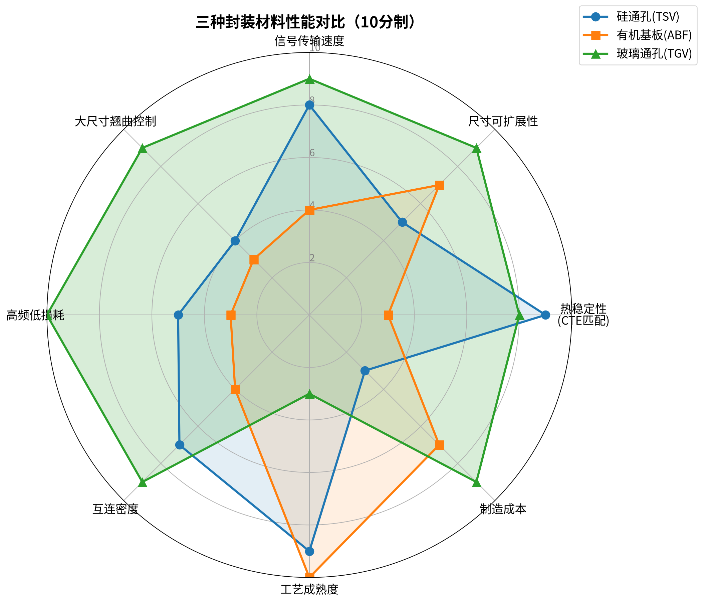
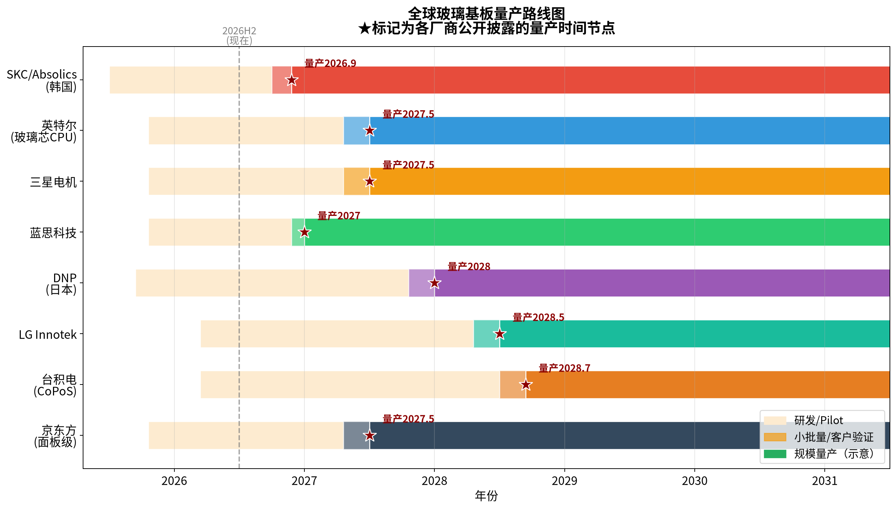
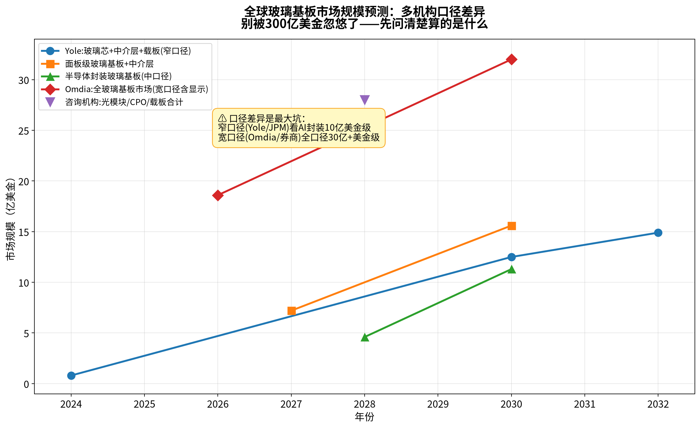
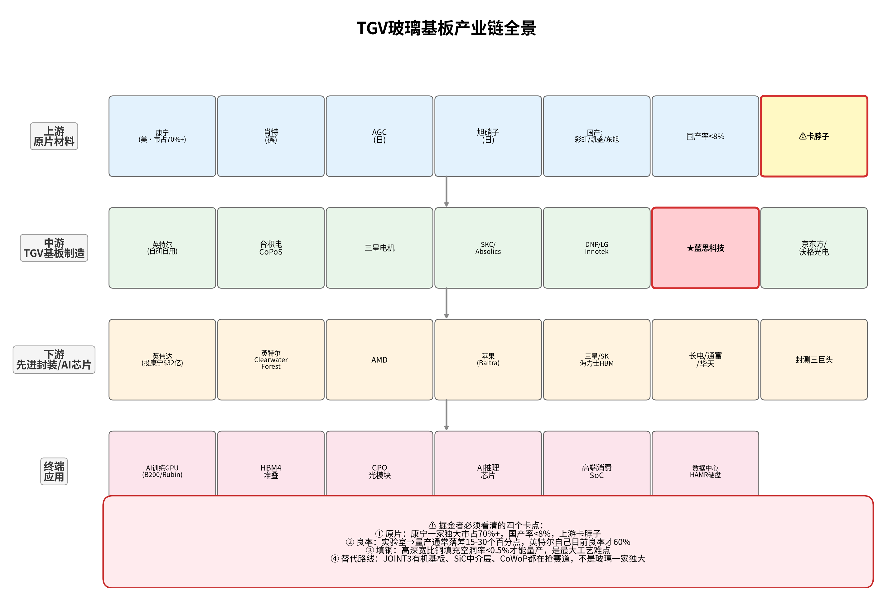
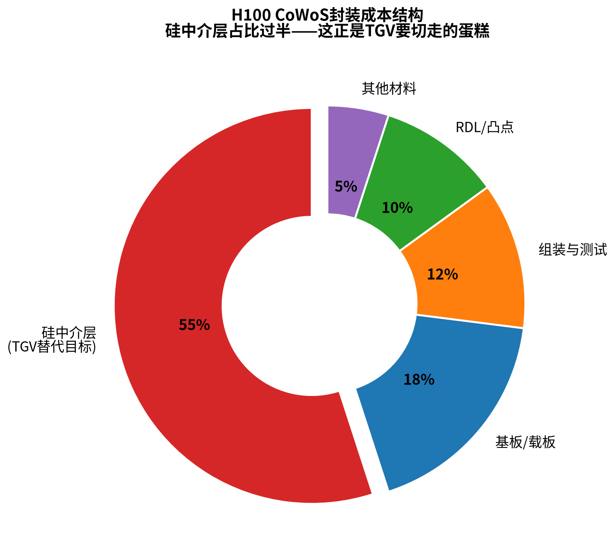

二、技术逻辑：为什么硅和有机物都走到了尽头
2.1 三种材料的物理参数对决
AI芯片封装对基板材料的要求是极端的：要在数百瓦功耗、数百摄氏度回流焊温差、TB/s级信号传输、数十微米级凸点间距下保持纳米级平整度和长期可靠性。当我们把硅中介层、有机基板（ABF/BT）和玻璃放在同一坐标系下，结论几乎是物理学决定的。

| 关键指标 | 硅中介层（TSV） | 有机基板（ABF/BT） | 玻璃基板（TGV） |
|---|---|---|---|
| 介电常数 Dk | ~11.7（半导体） | ~3.5–4.5（含玻纤） | ~3.8（可配方调节）(新浪访谈) |
| 介电损耗 Df @10GHz | 较高（半导体寄生电容大） | ~0.01–0.02（FR-4更高） | 0.001–0.003（低10倍）(网易/CSPT) |
| 热膨胀系数 CTE (ppm/°C) | ~2.6–3（与自身匹配） | ~12–17（与硅差4–6倍） | 3–9（可调，可做到与硅2.6完美匹配）(中国日报网) |
| 表面粗糙度 Ra | <1nm（晶圆级） | >1000nm（含玻纤突起） | <0.1nm（熔融下拉原生光滑）(VestLab) |
| 典型尺寸形态 | 300mm圆形晶圆（面积约70,685mm²） | 面板级（受有机翘曲限制） | 510×515mm方形（~262,650mm²，是12寸晶圆的3.7倍）(36kr/JOINT3) |
| 面积利用率（切大尺寸die） | ~60%（圆形切方形几何浪费） | 较好（方形） | >95%（方形，几乎无浪费）(雪球-CoPoS) |
| TSV/TGV深宽比上限 | ~10:1（TSV工艺受限） | N/A | 10:1量产（LIDE可达50:1，实验级更高） |
| 3dB带宽（实测） | 67GHz | N/A | 110GHz（支持128Gbaud）(SPIE APN) |
| 原材料价格基准 | 1× | 较低（但ABF膜被味之素垄断） | 约为硅的1/5（面板级摊薄）(雪球-CoPoS) |
| 工艺成熟度（量产良率） | ~95–98%（CoWoS-S已成熟） | >90%（ABF产业链成熟） | 60–85%（当前爬坡中，核心瓶颈） |
2.2 有机基板的三大死穴：翘曲、损耗、尺寸
ABF（味之素Build-up Film）有机载板过去二十年支撑了FC-BGA封装的黄金时代，但在AI大芯片面前同时撞上了三面墙。
第一面墙是翘曲（Warpage）。有机基板CTE约17 ppm/°C，硅芯片CTE约2.6 ppm/°C，相差6倍以上。当B200芯片尺寸做到60×60mm以上、封装中介层尺寸达到100×100mm、回流焊温度260°C时，热应力带来的基板翘曲量超过100μm，会直接导致微凸点断裂、布线错位，良率从99%骤降到80%以下(雪球-CoPoS)。这就是Rubin Ultra 4-die方案"翻车"的物理根因——当四颗GPU die和16层HBM4e被塞到一个CoWoS-L封装里，硅-有机-硅之间的应力分布超出了现有材料容忍窗口，测试中出现"封装多个方向弯曲、die无法与底层substrate完整接触"(ComputerBase 2026.03)，英伟达被迫退回2-die、用板级2+2方案替代单封装4-die。玻璃基板在510×515mm板级实验中翘曲量较有机基板减少50%以上(中国日报网)，从根上解决这个问题。
第二面墙是高频信号损耗。玻璃的Df值在10GHz下低至0.001–0.003，是FR-4有机基板的1/10，意味着在112Gbps PAM4乃至224Gbps信号速率下，有机基板介电损耗严重、信号失真甚至失效，玻璃基板则可以稳定支撑(网易/CSPT)。这也是为什么美银在2025.10《CPO & Glass Substrate Industry Outlook》中明确指出"112Gbps以上高速场景树脂基板完全失效，CPO场景中TGV玻璃基板无替代方案"(美银via雪球)。
第三面墙是尺寸与产能。有机基板本身虽可面板化，但ABF膜由日本味之素近乎独家供应，2026Q2上游原材料已涨价三成，美银预测服务器CPU+AI加速器在ABF需求中的占比将从2026年54%升至2028年66%，供需紧张延续到2027–2028(证券时报)。玻璃原材料的产能弹性远大于ABF膜，一旦配方成熟扩产不存在味之素式的卡脖子(证券时报)。
2.3 硅中介层的三重困境：成本、尺寸、几何浪费
硅中介层（Silicon Interposer）是CoWoS-S的核心，台积电用它连接GPU和HBM实现超高带宽互连。但它的问题恰恰出在"硅"本身。
几何浪费：硅中介层基于12英寸（300mm）圆形晶圆，而AI封装中介层是方形大尺寸（B200中介层100×100mm量级），"圆切方"带来约30–40%的边缘废料，硅材料利用率仅60%（EMIB硅桥方案可达90%但带宽有限）(雪球-EMIBvsCoWoS)。H100时代一片12寸晶圆（考虑良率）切28颗芯片，到B100/B200的CoWoS-L时代只能切16颗，单die分摊成本直线上升(爱建证券)。
成本高昂：硅中介层占CoWoS封装BOM的50–70%，大型AI封装单颗$800–1000(雪球)。SemiAnalysis数据显示单片CoWoS-S中介层晶圆价值约1万美元，CoWoS-L提升至约1.5万美元(爱建证券)。而玻璃原材料价格约为硅的1/5，加上面板级工艺简化，单位面积封装成本有望下降20–30%(雪球-CoPoS)。
电性能先天不足：硅是半导体，信号传输中存在电磁耦合和寄生电容，高频下损耗显著。玻璃是绝缘体，Dk仅硅的1/3，损耗因子低2–3个数量级(新浪访谈)。SPIE 2026年5月实测论文直接给出了"110GHz vs 67GHz"的硬数据(SPIE)，这在224Gbps SerDes时代是代际差距。
产能天花板：台积电CoWoS产能虽从2023年1.3–1.6万片/月扩张到2025年底7–8万片/月、2026年底11.5–14万片/月、2027年17万片/月(爱建证券)，但魏哲家在股东会上明确2026年仍然供不应求，这本质上受限于硅晶圆尺寸的物理边界——继续扩大圆形硅中介层已接近光罩极限。CoWoS-L把封装推到9.5倍光罩尺寸（约2500mm²以上），再往上走就必须"化圆为方"转向面板级，而面板级的最佳载体就是玻璃。
2.4 TGV核心工艺：LIDE是当前"黄金标准"
在玻璃上打微孔并不是想打就能打。玻璃是硬脆材料，传统激光烧蚀（Laser Ablation）会产生热影响区、微裂纹和再铸层，可靠性极差。喷砂、机械钻孔、纯化学刻蚀都无法满足亚50μm孔径、深宽比10:1以上的量产要求(网易/CSPT)。
当前产业已基本收敛到飞秒激光诱导+湿法化学刻蚀（LIDE, Laser Induced Deep Etching）作为主流路线，核心专利持有者是德国LPKF Laser & Electronics。其工艺是"两步走"：先用皮秒/飞秒超短脉冲激光在玻璃内部非线性改性（不直接去除材料、无热积累、无裂纹），再用HF等蚀刻液湿法腐蚀，改性区选择比可达50:1以上，形成侧壁光滑（Ra<0.1μm）、无应力、无微裂纹的通孔(VestLab/雪球)。这是目前唯一经HVM（大规模量产）验证的高良率TGV方案。
TGV完整工艺流程分为三大模块(zmsh-semitech)： 1. 成孔模块：激光改性→湿法刻蚀→AOI检测 2. 金属化填孔模块：溅射（种子层）→化学镀铜→电镀填孔→CMP平坦化（这是真正的产业卡点） 3. RDL重布线模块：光刻胶涂覆→曝光→显影→刻蚀
三、产业时间线：从CES 2026到2030的"八年抗战"

3.1 英特尔：抢跑但仍是"打样性质"
英特尔是玻璃基板最早、最激进的推动者，在亚利桑那Chandler累计投入超10亿美元建设研发与pilot基础设施(Chosun Biz)。2026年1月NEPCON Japan展示了业界首款"Thick Core"玻璃芯基板样品——整体封装78×77mm、10-2-10结构（玻璃芯两侧各10层RDL）、玻璃芯本身由两层800μm级材料组成、嵌入两个EMIB硅桥、支持约1716mm²硅面积（2倍光罩），并且英特尔明确表示测试中没有出现SeWaRe（玻璃微裂纹）问题——这是玻璃基板量产的关键里程碑(TrendForce 2026.01)。
但需要澄清一个市场误传：2026年6月1日英特尔发布的Xeon 6+ "Clearwater Forest"（首款18A服务器CPU、288核、Foveros Direct 3D+12个EMIB 2.5D）(TrendForce 2026.03) (IT之家)并不是玻璃芯基板的量产产品——根据产业链专家交流信息，当前量产良率仅约60%，2026H2转入小批量试产，首批玻璃芯基板CPU预计2027年初面市，且初期是"打样性质"、"给市场做示范"，不会短期爆发(新浪专家交流 2026.06)。英特尔内部把玻璃基板战略定位于Forest、In-Body等先进封装技术之下的"补充选项"，走一步看一步，核心原因是新技术需要经历试验期、观察期、产品打磨阶段。精加工将从Chandler转移到新墨西哥州Rio Rancho基地（该基地已获超35亿美元先进封装投资）(证券时报)，并规划印度建设玻璃芯生产基地。供应商方面，玻璃原片由美国（康宁）、德国（肖特）、日本（AGC/NEG）分任一、二、三供，下游基板加工合作EPS、ATS等，封测合作伙伴为安靠(新浪专家交流)。
3.2 台积电：审慎的"2-3年后"路线图
台积电是最关键也最审慎的玩家。2026年Q1法说会首次公开提及CoPoS（Chip-on-Panel-on-Substrate），6月4日股东会上魏哲家明确："已设Pilot Line，但新技术无短期大规模量产条件，预计仍需2–3年才能进入大批量生产阶段"(证券时报)。6月17日台积电正式发布CoWoS玻璃基板开发计划，携手Ibiden、群创完成玻璃芯基板产业化验证(新浪财经 2026.06.17)。
CoPoS路线图分阶段：pilot线2026年6月建成（310×310mm规格起步，2026年2月开始接收设备）(TechNews)，2027年小批量试产，2028H2–2029年正式量产；远期目标515×510mm甚至750×620mm大尺寸面板（2026年5.5倍光罩、2028–2029年14倍光罩）(证券时报/网易)。CoPoS初期用玻璃做中介层替代硅中介层，远期再切换到玻璃芯基板全替代，成本降幅目标超60%(新浪大宁新闻)。
2025年先进封装业务占台积电营收约8%，2026年预计略超10%，2026年资本开支520–560亿美元中10–20%投向先进封装及相关领域，魏哲家预计未来5年先进封装增速快于公司整体(证券时报)。
3.3 三星阵营：差异化从HBM切入
三星电机走"材料端+大客户绑定"路线，韩国世宗工厂试产线已运行，TGV深宽比做到10:1、铜填充空洞率<0.5%（行业较高水平），与住友化学合资生产玻璃芯材料，已向苹果、Broadcom供应玻璃基板样品用于苹果"Baltra"AI服务器芯片测试，目标2027年量产(Chosun Biz 2026.04) (eet-china)。与住友化学的合资被认为是"从HBM封装切入再扩展至通用先进封装"的差异化路线，避开与台积电、英特尔在通用AI封装市场的直接竞争。
SKC/Absolics被公认为量产进度最快的玩家。佐治亚州Covington工厂是全球首座半导体玻璃基板专用工厂，已完成量产准备，样品正接受AMD、AWS认证，2026年底前启动商业化量产，有望成为全球首家量产的企业(eet-china 2026.06)。2025年底任命具SK海力士+英特尔背景的姜志浩为CEO，批量吸纳SK海力士工程师强化TGV工艺攻关，定位SK集团"存储器+先进封装+下一代基板"AI全产业链战略的关键一环。
LG Innotek相对谨慎，与精密玻璃加工企业UTI合作强化核心技术，社长文赫秀（Moon Hyuk-soo）虽给出2028年量产目标，但同时表示"全规模市场需求可能在2030年左右出现"，被业界解读为"优先技术完备性和市场时点，不急于速度竞赛"(Chosun Biz)。
3.4 日本阵营：材料帝国的联盟战
DNP（大日本印刷）2025年12月16日宣布在埼玉县久喜工厂新建TGV玻璃芯基板pilot line，12月起陆续投产，2026年初开始提供高质量样品，目标2028财年量产，面板尺寸510×515mm，同时提供"铜填充型"和"金属侧壁共形型"两种产品，主打高aspect ratio高品质市场(DNP官方新闻稿 2025.12.16) (Digitimes)。
更值得关注的是JOINT3联盟——由Resonac（原昭和电工）牵头集结了27家全球材料、设备、EDA巨头（应用材料、LAM、TEL、Synopsys、佳能、USHIO、3M、AGC、古河电工等），开发515×510mm面板级有机中介层，APLIC产线计划2026年开始运营(36kr)。虽然JOINT3走的是有机面板路线而非玻璃，但它的存在提示一个关键事实：玻璃并不是面板级封装的唯一选择——有机面板、SiC中介层、玻璃三条路线将长期竞争，而非玻璃一统天下。
AGC（旭硝子）/NEG（日本电气硝子）作为传统玻璃三强（康宁/AGC/肖特）中的日本力量，主要通过JOINT3联盟和对DNP、三星的材料供应参与战局。
3.5 材料双雄：康宁与肖特的差异化卡位
康宁（Corning）是这一轮玻璃基板浪潮的最大赢家。它同时在三条战线布局：(1)半导体玻璃原片（熔融下拉法+Low-CTE配方专利壁垒），已通过台积电CoPoS试产线验证，2026年2月交付首批适配产品；(2)2026年5月6日与英伟达签长期合作，最高32亿美元投资（首付$5亿预融资权证+未来$27亿增持），在北卡/德克萨斯建三座新厂，美国光互联产能扩10倍、光纤产能增50%+、创造3000+岗位(Nasdaq) (AsiaICT)；(3)2026年7月初在首尔行业大会发布GlassBridge玻璃桥光互联组件，采用晶圆级离子交换（IOX）工艺在玻璃内部预制纳米级光波导，实现无源对准（公差放宽至30μm），单端面耦合损耗<1.5dB、24通道并行耦合良率>95%、单台光模块成本下降22%，已与英伟达、Meta、亚马逊签数十亿美元长约，英伟达新一代Rubin架构GPU全面适配，明确卡位AI数据中心光互联核心赛道(eet-china 2026.07.03)。康宁Q1 2026光通信业务营收同比增长36%至18.5亿美元，公司计划到2030年GenAI相关光电子业务成长为100亿美元营收流(Nasdaq)。
肖特（SCHOTT）2025年9月在SEMICON Taiwan展示先进封装玻璃方案，聚焦超平TTV（总厚度偏差）控制和全球产能扩张，2025年初通过收购QSIL GmbH Quarz强化半导体材料组合(SCHOTT官方 2025.09)。相比康宁的激进垂直整合，肖特更聚焦于"材料供应商"角色，提供玻璃晶圆和面板产品，覆盖玻璃载片、玻璃中介层、玻璃芯原片多个层级。
四、市场规模：口径差异是创作者最大的坑

不同机构给出的市场规模数字差出一个数量级，这不是谁对谁错，而是口径完全不同。内容创作者必须先把口径讲清楚，否则会误导观众：
| 机构 | 发布时间 | 口径范围 | 2026 | 2028 | 2030 | CAGR |
|---|---|---|---|---|---|---|
| Yole Group | 2025.09 | 窄口径：GCS(玻璃芯基板)+玻璃中介层+临时玻璃载片（仅半导体封装） | — | — | 123亿美元 | 12% (2024-2032) (Yole) |
| 摩根大通 | 2025.09 | 中窄口径：仅玻璃芯基板（GCS单品类） | — | 46亿 | 113亿 | — (JPM via 雪球) |
| 摩根士丹利 | 2025.11 | 中口径：玻璃中介层+玻璃芯基板（不含临时载片） | — | — | 156亿美元（2027:72亿） | — (MS) |
| Omdia | 2026.04 | 宽口径：全玻璃基板（含显示面板+封装+光伏TCO） | 186亿美元 | — | 320亿美元 | 14.5% (Omdia/中国日报) |
| 高盛 | 2025.08/2026.02 | 全品类：GCS+Interposer+Carrier（含CPO和6G等） | — | 280亿美元 | — | 47% (2025-2028) (Goldman) |
| 美银 | 2025.10 | 乐观口径：AI Chiplet + CPO专用玻璃基板 | — | — | 1200亿美元（CPO占37亿，CAGR 86%） | — (BofA) |
| Verified Market Reports | — | TGV细分市场 | — | — | — | 9.5% (2026-2033, 2033年25亿美元) (iST) |
给内容创作者的关键判断： - 保守共识口径（适合严肃长文/分析）：半导体封装用玻璃基板（GCS+Interposer+Carrier）2030年约120–160亿美元（Yole到摩根士丹利区间），2024–2030 CAGR约30–40%；其中HBM/逻辑封装细分CAGR约33%(东方财富)。 - 市场情绪口径（适合短视频/题材内容）：全品类（含CPO/光互联/6G/MicroLED）远期空间看到$280亿–$1000亿+，是AI硬件叙事的完美素材，但需要明确标注"含周边增量市场"。 - 渗透率拐点：高盛预测2030年高端FC-BGA和2.5D封装中玻璃基板渗透率达45%(高盛)；东方财富预测2027年HBM封装渗透率20%、2030年封装玻璃基板整体渗透率50%(东方财富)。2026年供需缺口约40–60%，2026年全球TGV基板有效产能严重不足。 - 行业节奏判断：2026年是商业化验证元年（小批量送样、试产线通线），2027年HBM封装/CPO开始规模渗透，2028–2030年是快速增长期，这与台积电/英特尔/DNP/Absolics量产时间表高度一致。
价值量参考：单颗高端AI芯片玻璃基板价值>100美元(东方财富-可乐小苍蝇)；显示领域TGV玻璃基板单价6000–8000元/㎡（与高阶6–8层PCB持平）；半导体高精密玻璃基板按通孔数量、叠层层数、精度定制化报价，类似芯片流片定价模式(新浪访谈)。
五、产业链全景拆解

5.1 上游：特种玻璃原片（最卡脖子）
这是整条产业链技术壁垒最高、国产化最难的环节，占成品基板终端售价1.5–10%，但没有合格原片中游完全无法量产(雪球)。用于高端芯片封装的TGV原片要求ppb级杂质管控、CTE精准对标硅、纳米级平整度、超低介电损耗。
全球格局：康宁（70%+）、AGC旭硝子（~15%）、肖特（~8%）三家垄断90%+高端市场份额，其中康宁凭借"溢流熔融下拉法（Fusion Process）"专利封锁，是全球唯一成熟量产半导体级超薄溢流玻璃的企业，可做到0.1–0.7mm超薄、纳米级平整度、CTE与硅片高度匹配(雪球康宁垄断分析)。台积电CoWoS、英伟达GB200、英特尔下一代CPU玻璃中介层基材几乎独家采购康宁，是全球算力芯片玻璃基板第一原料商。
国产现状：凯盛科技、旗滨集团、彩虹股份、力诺、山东药玻等持续研发送样，但性能稳定性、批次一致性仍有差距，尚未实现批量替代，是产业链最大短板(新浪访谈)。彩虹股份打赢了337专利战、自研料方突破、是国内唯一能量产G8.5/G10.5高世代显示玻璃基板的企业（国内市占超30%、全球前四），2026年4月传出封装级原片送样验证的进展(今日头条)，但是否真正突破半导体级Low-CTE硼硅玻璃仍需观察。凯盛科技（中国建材集团旗下）在UTG和高铝硅玻璃领域有积累，旗滨集团是光伏和浮法玻璃龙头切入半导体。
5.2 中游：TGV工艺与基板加工（国内最能卡位）
中游TGV加工是一条完整的工艺链：薄化→激光打孔（LIDE）→湿法刻蚀→PVD种子层→化学镀铜→电镀填铜→CMP→RDL布线→AOI检测。
设备价值占比：国内一条510×515mm玻璃基板产线总投资约13–15亿元，满负荷年产能8–10万㎡，其中设备价值分布为：激光打孔及腐蚀线30%（核心，决定TGV良率）、PVD及黄光设备50%（镀膜机+曝光机）、清洗/烘烤/AOI检测20%(eet-china/中泰证券)。
海外基板加工： - Absolics（SKC）：佐治亚工厂全球首座专用厂，进度最快，铜填充空洞率<0.5% - DNP：日本久喜工厂pilot线，510×515mm，2026初样品、2028财年量产 - Ibiden/群创：与台积电合作验证玻璃芯基板 - 三星电机：世宗工厂，深宽比10:1
国内基板加工（重点突破环节）： - 沃格光电（通格微）：被产业链公认为国内TGV全流程（薄化、激光钻孔、填铜、多层线路）最硬核的企业，武汉10万㎡TGV产线已满产，成都8.6代面板级产线2026年Q3投产，最小通孔3μm、量产良率稳定90%，1.6T光模块玻璃基板已小批量供货中际旭创，AI封装玻璃中介层已向英伟达、华为算力芯片送样(今日头条)。 - 京东方A：2026年5月20日与康宁签三年MOU（核心是玻璃基封装载板），董事长陈炎顺明确"不再是简单产品采购，而是聚焦AI时代玻璃基全新技术创新和应用延展"；设计月产能1000片的板级玻璃基封装载板试验线2026H1全自动化设备通线，已产出大尺寸高层数玻璃基载板样品并送样；TGV开孔、深孔填铜、增层布线核心制程已打通(凤凰网/IT之家 2026.07.04)。京东方的核心优势是同时具备高世代玻璃原片制造+面板级TGV完整加工能力，是国内唯一的"双壁垒"玩家。 - 蓝思科技、深天马：持续推进TGV研发与客户联合验证(eet-china)。 - 厦门云天、佛智芯、三叠纪（迈科）、安捷利美维、成都奕成等：加工企业但CMP设备购买量较少，电镀填铜瓶颈尚未突破(网易)。
国内设备供应商（卖铲人）： - 激光打孔：帝尔激光、大族激光、华工科技已实现出货或取得订单(新浪)；大族激光作为国内晶圆级TGV设备龙头占据较大份额(网易) - PVD/刻蚀/沉积：北方华创、中微公司、拓荆科技(爱建证券) - 直写光刻/电镀：芯碁微装（PCB直写光刻）、东威科技（电镀设备） - 耗材：天承科技（TGV电镀添加剂国内首家量产）
5.3 下游：先进封装代工
- 台积电CoWoS-L/CoPoS：高端AI GPU绝对垄断（英伟达独占60%+产能）
- 英特尔Foundry：EMIB+Foveros+玻璃芯，定位整合者+生态构建者，主要服务自家Xeon+外部美国客户（联发科、谷歌订单已获）
- 国内OSAT：长电科技、通富微电、盛合晶微是核心
- 长电科技：XDFOI平台完成玻璃基板FCBGA封装应用验证，4nm封装量产，A股唯一实现HBM3E封装量产的企业（8层HBM3E良率98.5%，12层2026年6月量产）；2026年上调固投预算到百亿级，江阴厂房配套玻璃基板中试线，玻璃裂片良率95%+，50mm以上大尺寸FCBGA完成可靠性验证，规划2027年扩产至月产5–8万片(东方财富)
- 通富微电：AMD核心封测合作伙伴，全面布局玻璃芯基板、玻璃中介层2.5D/3D，TGV玻璃基板封装通过可靠性测试，定增44亿加码HPC/汽车封装，2026Q1净利润同比+224.55%
5.4 应用终端
三大永久封装形态：(1) 玻璃芯基板（GCS, Glass Core Substrate）——替代ABF有机芯板，是英特尔路线、最远期；(2) 玻璃中介层（Glass Interposer）——替代硅中介层，是台积电CoPoS近期路线；(3) CPO/光互联用玻璃基板——康宁GlassBridge路线，直接集成光波导实现光电共封装(eet-china)。
此外"临时玻璃载片"（Glass Carrier）是当下已经起量的近距应用——先进封装减薄工艺中承载晶圆的临时载体，每颗Rubin芯片需配套5–9片12寸玻璃载片(雪球)（注意：这不是TGV永久基板，不能混淆）。
六、中国机会：面板厂跨界是最大变量
6.1 不聊蓝特光学，只谈赛道格局
国内产业链按环节的真实卡位：
| 环节 | 国产化率/进度 | 代表企业 | 核心判断 |
|---|---|---|---|
| 高端半导体玻璃原片 | <8%，仍依赖康宁/肖特/AGC | 凯盛科技、旗滨集团、彩虹股份、力诺 | 最难突破，配方+工艺双壁垒，认证周期3–5年，预计2028–2030年开始小批量替代 |
| TGV激光设备 | 国产替代较快，部分设备已交付台积电/康宁 | 帝尔激光、大族激光、华工科技 | 最先受益，设备先行逻辑清晰 |
| 基板加工（TGV全流程） | 中试/小批量阶段，头部企业良率85–90% | 沃格光电（通格微）、京东方 | 弹性最大，沃格进度最领先但规模小；京东方体量大+康宁合作是最大变量 |
| 电镀/光刻/PVD设备 | 国产化中，部分已入产线 | 芯碁微装、东威科技、北方华创、中微公司、拓荆科技 | 卖铲人逻辑，确定性强 |
| 封装代工（OSAT） | 样品验证/中试 | 长电科技、通富微电、盛合晶微 | 直接下游，长电进度最前 |
| 显示大厂跨界 | 试验线通线/送样阶段 | 京东方、TCL科技（前期调研/预研）、蓝思科技 | 最被低估的变量，大尺寸玻璃制造+精密加工能力与面板产线同源 |
6.2 京东方+康宁合作的信号意义
2026年5月20日京东方官宣与康宁的三年MOU，是国内玻璃基封装赛道最重磅的产业事件。它的意义不仅是两家公司合作，而是全球第一显示玻璃厂+中国第一面板厂"All in"半导体玻璃封装的明确信号。京东方明确拥有玻璃基封装载板制造完整工艺能力，TGV开孔、深孔填铜、增层布线核心制程已突破，月产能1000片试验线2026H1通线并送样(凤凰网)。自5月20日官宣至7月3日，京东方A股价累计涨幅超94%（即便7月3日单日跌7.91%）(凤凰网)。
京东方的逻辑很直接：它本就掌握大尺寸玻璃制造、大面积精密加工、显示面板制程三大能力，与TGV工艺、大面积载板加工技术同源度极高(中国日报)。面板厂从显示玻璃跨界半导体玻璃，类似于台积电从foundry切入先进封装——用既有能力降维打击。
6.3 政策加持：从"鼓励"到"清单级"
先进封装已被写入中国"十五五"规划清单，大基金三期3440亿中专项倾斜先进封装设备与材料，新建CoWoS/2.5D/3D封装产线可享设备贴息+研发加计扣除(微博/政策梳理)。工信部《半导体材料产业高质量发展行动计划(2026—2030年)》把玻璃基板、TGV技术列为重点攻克方向，目标2030年关键材料国产化率突破70%(今日头条)。政策、资金、产业三重共振，国产替代时间窗口明确在2026–2030年。
6.4 风险提示（必须说给观众听）
- 国内厂商 Tier1 直接进入英特尔/台积电供应链仍受地缘政治限制，英特尔明确暂未直接采购中国大陆注册公司产品，国内多以Tier2/3身份间接切入(新浪专家交流)
- 高端原片突破时间长（3–5年），短期难以摆脱进口依赖
- 电镀填铜工艺瓶颈国内未完全突破，多数企业CMP设备采购量少是信号(网易)
- 部分国内企业TGV业务当前营收占比低、阶段性亏损，股价可能提前透支预期(今日头条)
七、瓶颈和风险：必须告诉观众的"另一面"
7.1 良率：从60%到90%的2–3年爬坡
当前玻璃基板量产良率是最大制约： - 英特尔pilot线当前良率约60%（2026H2小批量打样性质）(新浪专家交流) - 行业量产良率普遍70–85%，远低于有机基板90%+、硅中介层95–98%的水平(新浪) - TGV孔金属化空洞率约15%——百万级通孔要求100%无缺陷，单个空洞即导致整颗芯片失效(新浪) - 乐观预期：2027年良率85%+、2030年95%+(东方财富)
良率问题细分为两大维度： 1. 成孔良率：激光/刻蚀孔形不一致、表面粗糙度高影响后续金属化均匀性；LIDE虽然解决了微裂纹问题，但大尺寸面板上的通孔位置精度和锥度一致性仍是工程难题(iST宜特) 2. 铜填孔良率：深宽比超过10:1后电镀液循环困难，容易出现中心空洞（seam void）和夹断（pinch-off void）；玻璃表面无原生氧化层，铜核化需要MnOₓ或硅烷SAM粘附层；玻璃脆性在湿/干转换中易产生微裂纹(Patsnap) (iST)
7.2 成本：当前比有机基板高3–5倍
2026年玻璃基板量产成本约500–800美元/㎡，比有机基板高3–5倍(新浪)——这还没算初期高折旧、研发分摊、良率损失。只有通过大规模面板级量产（510×515mm甚至更大）才能把单位成本打下来，这是为什么所有玩家都在争抢"全球首条量产线"的原因——谁先跑通规模经济谁先吃成本红利。
设备投资门槛极高：一条510×515mm产线13–15亿元（中泰证券），高端产线可达数十甚至上百亿元(eet-china) (东方财富)。
7.3 可靠性：铜-玻璃CTE失配是"达摩克利斯之剑"
铜CTE约17 ppm/K，硼硅玻璃3–5 ppm/K，相差4–5倍。在电镀温度（60–80°C）、回流焊温度（>260°C）、芯片长期运行热循环下，铜-玻璃界面会积累巨大热应力，可能导致界面分层、铜玻璃脱落、漏气失效(iST) (Patsnap)。当前行业解决方案是MnOₓ粘附层+还原退火工艺，可以做到剥离强度>1.5 N/mm，但这仍需长期可靠性验证（HAST/HTS等加速老化测试模拟多年使用场景）。
玻璃本质脆性，在加工、封装、测试、使用过程中微裂纹（SeWaRe）风险始终存在。英特尔1月展示的厚芯样品宣称"No SeWaRe Issues"是重大进展(TrendForce)，但单样品通过不等于大规模量产稳定。
7.4 技术路线竞争：玻璃不是唯一答案
必须客观指出：在"后CoWoS"时代，玻璃不是唯一的技术路线。目前至少有四条路线并行竞争： 1. 玻璃面板（CoPoS）：台积电主推 2. 有机面板（APLIC/JOINT3联盟）：Resonac牵头27家巨头，2026年试产，优势是产业链成熟 3. SiC中介层：导热极佳（超铜）、承受极端功耗，是英伟达Rubin部分环节考虑的选项，但制造难度极高（硬度接近钻石）(36kr) (CSDN) 4. CoWoP（Chip-on-Wafer-on-Platform）：英伟达探索取消封装基板、中介层直连主板，2026 late测试、2027量产(TweakTown)
有一线产业专家在CSPTxITGV 2026会议上直言："玻璃基板的产业化应用至少在2030年以后"，理由是主流工艺路线刚收敛到飞秒激光+湿法刻蚀、电镀填铜一致性未解决、行业标准体系至今缺位(网易)。这是一个重要的反面声音，内容创作时需要呈现，不能只讲乐观叙事。
7.5 供给侧风险：2028后国内产能集中释放可能引发价格战
多家机构提示，如果2027–2028年京东方、沃格、彩虹、长电等企业集中扩产，可能在2028年后出现产能集中释放、价格战风险(东方财富)。
八、与英伟达AI算力叙事的衔接：为什么黄仁勋要"换地基"
8.1 封装成本正在吞噬AI芯片BOM

英伟达AI GPU的成本账是玻璃基板叙事最直观的落点。根据Silicon Analysts和SemiAnalysis数据：
- H100制造成本约$3,320/颗：HBM $1,350（40%）、CoWoS封装 $750（22%）、逻辑晶圆 $630（19%）、其他 $590（18%）(东方财富)
- B200制造成本约$4,720/颗：HBM $2,200（47%）、CoWoS-L封装 $1,100（23%，单代涨幅47%）、逻辑晶圆 $720、其他 $700(爱建证券/SemiAnalysis)
- Rubin预估：CoWoS-L封装约$2,000/颗（占BOM 8%但绝对值高），GPU晶圆~$8,000（32%）、HBM4 ~$12,000（48%）(CSDN)——注意这个数字来自二手分析，置信度较低
更重要的是涨价速度：CoWoS封装价格每年涨15–20%，同期逻辑晶圆仅涨价约5%，封装涨价速度是芯片本身的3倍(东方财富)。H100时代单片晶圆切28颗，到B100/B200只能切16颗，单位die分摊封装成本上升(爱建证券)。
这就是玻璃基板的成本意义：硅中介层占CoWoS BOM的50–70%（$800–1,000/颗），玻璃原材料成本仅为硅的1/5，加上面板级生产（510×515mm单板面积是12寸晶圆的3.7倍、面积利用率95%+），单位面积封装成本有望下降20–30%，AI模块整体总成本下降20–30%(雪球-CoPoS)。在CoWoS价格年涨15–20%、ABF膜紧缺涨价30%的背景下，玻璃基板提供的是"结构性降本"而非"周期性降本"。
8.2 Warpage：Rubin Ultra给整个行业上的一课
2026年3月爆出的Rubin Ultra封装问题是玻璃基板叙事的"催化剂事件"。台积电CoWoS-L虽然把封装能力从CoWoS-S的3.3倍光罩扩展到9.5倍光罩（120×150mm），支持12颗HBM(ComputerBase)，但当英伟达尝试在单封装中放入4颗Rubin Ultra die+16颗HBM4e时，测试中封装出现多方向翘曲，计算die无法与底层substrate完整接触(WCCFTech/TweakTown)。最终方案是退回双die设计，通过板级2+2组合实现等效性能。
这件事的产业意义远超一款芯片：它用价值数十亿美元的研发教训告诉全行业——当封装尺寸超过某个阈值（约9–10倍光罩），硅+有机组合的CTE失配问题是物理级硬约束，靠工程优化（加厚基板、加stiffener ring、调整RDL密度）只能延缓，无法根治。唯一的根治方案是换用CTE与硅匹配的芯材，也就是玻璃。
但也要客观看到：CoPoS要到2028H2–2029才能量产，赶不上Rubin Ultra的2027时间窗口。英伟达短期的解决方案是：(1) 退回到双die设计；(2) 探索CoWoP（取消封装基板）方案在Rubin GR150上的应用（2027量产）；(3) 中期推动台积电加速CoPoS玻璃基板导入（为Rubin Ultra下一代Feynman架构做准备）。玻璃基板解决的是2028–2030年之后Feynman及以后架构的问题，不是当下Rubin的问题。
8.3 从电到光：康宁GlassBridge打开第二战场
黄仁勋32亿美元投资康宁，很多人误以为只是买光纤。实际上这笔投资横跨光纤+光模块+光互联基板三个层面。真正的颠覆性产品是康宁7月初发布的GlassBridge玻璃桥：一块内置渐变折射率光波导的硼硅玻璃转接件，用晶圆级离子交换（IOX）工艺在玻璃内部做隐形光路，一端尺寸适配纳米级硅光芯片、另一端匹配微米级标准光纤，相当于光的"减震带+立交桥"。核心参数： - 对准公差从亚微米级放宽到30μm（无源对准，省去精密主动对准设备） - 单端面耦合损耗<1.5dB，O波段光传输损耗<0.1dB/cm - 24通道并行耦合良率>95%（传统方案长期<75%） - 单台光模块生产成本下降22% - 适配MPO/MDC标准光纤连接器，兼容TMT物理接触接口 - 已签英伟达、Meta、亚马逊数十亿美元长约，Rubin架构全面适配(eet-china 2026.07.03)
CPO（Co-Packaged Optics，光电共封装）是AI数据中心网络的终极方向——把光引擎和ASIC/CPU/GPU封在同一个封装里，取代可插拔光模块。CPO的核心载体就是玻璃基板：玻璃既是封装基板，又是光波导介质，实现"光电一体"。美银预测CPO专用玻璃基板细分市场从2026年3.1亿美元增长到2030年37亿美元（CAGR 86%）(BofA via 雪球)。
8.4 黄仁勋"一楼基础设施在变"的完整拼图
把视角拉高看，黄仁勋2025–2026年的一系列动作是在重写AI数据中心的底层材料栈： - 芯片层：Blackwell→Rubin→Feynman架构演进，3nm→2nm→1.4nm制程 - 封装层：CoWoS-S→CoWoS-L→CoPoS（玻璃基板）+CoWoP，从硅中介层到玻璃中介层到无基板 - 互连层：NVLink从900GB/s到1.8TB/s、铜缆→光纤、CPO光电共封装、GlassBridge玻璃桥 - 材料层：投资康宁$32亿锁定光互联玻璃产能，投资Coherent+Lumentum $40亿锁定光器件，Marvell多亿美元锁光DSP，完成光器件-光模块-光纤-基板全链条闭环(AsiaICT)
玻璃基板不是孤立的材料替代事件，而是整个AI硬件栈"换底"运动的一部分。当算力集群规模从万卡到十万卡再到百万卡，东西向流量（GPU间参数同步）呈指数增长，数据传输能耗可占AI集群总能耗近50%，而光纤能耗仅为铜线的1/5–1/20(雪球)。从硅到玻璃、从铜到光、从圆形晶圆到方形面板、从有机基板到玻璃芯板——这是一场从芯片封装一直延伸到数据中心综合布线的材料革命，而玻璃同时是"封装革命"和"光互联革命"的交点。
九、结论与判断
9.1 核心判断
-
玻璃基板替代硅中介层和有机基板是物理必然，不是短期题材。CTE匹配、高频低损耗、纳米级平整度、面板级大尺寸四大优势是材料本征属性，无法通过硅或有机物的工程优化追赶。SPIE实测110GHz带宽、50%+翘曲降低、20–30%成本下降等数据已经在学术和产业层面交叉验证。
-
2026年是商业化验证元年，2028–2029年是规模量产拐点。这与英特尔、台积电、Absolics、DNP、三星电机的时间表高度一致。短期（2026–2027）是pilot、小批量、送样、良率爬坡阶段；中期（2028–2029）是CoPoS/GCS规模量产、高端AI芯片大规模导入；长期（2030+）是CPO光互联+玻璃芯基板全替代、渗透率达45%+。
-
市场规模用窄口径120–160亿美元（2030）作为基准，千亿级口径是含CPO/6G/MicroLED的远期叙事。内容创作时必须区分口径，否则是误导观众。
-
国内机会真实但分层：最卡脖子的高端玻璃原片短期仍被康宁/AGC/肖特垄断（国产化率<8%），但中游TGV加工（沃格/京东方）、设备（帝尔/大族/北方华创）、下游OSAT（长电/通富）有明确卡位。面板厂（京东方、TCL）跨界是最被低估的变量，因为TGV和面板产线技术同源度极高。
-
风险必须正视：良率60–85%、成本比有机高3–5倍、铜-玻璃CTE失配长期可靠性待验证、电镀填铜是产业卡点、技术路线竞争（有机面板/SiC/CoWoP）、行业标准缺位、一线专家"2030年后才真正产业化"的警告。玻璃基板是"3–5年级别"的产业机会，不是"今年翻倍"的题材炒作。
-
与英伟达叙事完美衔接：H100→B200封装成本跳涨47%到$1,100/颗、CoWoS年涨15–20%（是晶圆涨价的3倍）、Rubin Ultra 4-die因翘曲失败退回双die、黄仁勋$32亿投资康宁+GlassBridge锁定光互联+Rubin适配玻璃基板——这些都是"一楼基础设施在变"的具体证据链。玻璃基板把AI芯片封装成本打下来、解决大尺寸die翘曲、同时承载光电共封装（CPO），是AI硬件下一代平台的底座。
9.2 给内容创作者的内容抓手
- 短视频开场钩子（3秒反常识）："你知道英伟达最新的Rubin Ultra芯片为什么做不成4芯吗？不是因为制程不行，而是因为——基板弯了。"
- 核心数据记忆点：H100封装$750→B200封装$1100（+47%）；玻璃Df是有机的1/10、3dB带宽110GHz vs 67GHz；康宁70%+市占、京东方+康宁合作、2028量产拐点
- 情绪共鸣点：摩尔定律见顶不是芯片厂的问题，是材料的问题；玻璃这种"古老材料"成为AI时代的新地基；日本DNP一家印刷厂都在为AI芯片打地基
- 风险平衡：明确说"不是今年就爆，是2028–2030的3-5年级别机会"，给观众理性预期
- 金句备选："当黄仁勋投32亿美元给一家做了175年玻璃的公司，你应该意识到——AI算力的底层，正在从硅变成玻璃"
9.3 待持续跟踪的关键KPI
- 台积电CoPoS试产线良率数据（2026H2起每季度）
- Absolics佐治亚工厂量产启动时点和首批客户
- 英特尔新墨西哥工厂玻璃芯CPU 2027年初上市后的可靠性反馈
- 京东方-康宁合作季度进展（公司已明确按季度披露）
- 沃格光电成都8.6代线投产时点（2026Q3）和客户认证进展
- 康宁GlassBridge在Rubin平台的实际导入节奏
- 国内玻璃原片（凯盛/旗滨/彩虹）通过头部封测厂认证的时点
- ABF膜供需拐点（味之素产能扩张节奏）——这是玻璃基板渗透率的反向指标
本报告所有数据均标注来源URL，优先采用2025H2–2026年最新公开信息。部分产业数据来自券商研报、产业链专家交流和媒体报道，不同来源之间存在口径差异时已在文中标注。涉及国内厂商信息仅做赛道级分析，不构成任何投资建议。
免责声明：本报告所有数据均标注来源URL，优先采用2025H2–2026年最新公开信息。涉及国内厂商信息仅做赛道级分析，不构成任何投资建议。
本内容由 Coze AI 生成，请遵循相关法律法规及《人工智能生成合成内容标识办法》使用与传播。